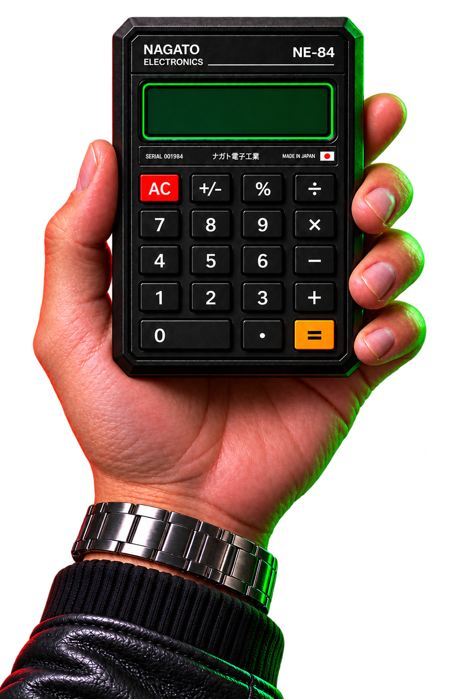

eiπ + 1 = 0
a² + b² = c²
x = (−b ± √(b² − 4ac)) / 2a
∑n=1∞ 1/n² = π²/6
∫−∞∞ e−x² dx = √π
π = 3.141592653589793
φ = (1 + √5) / 2
√2 = 1.41421356237
limx→0 sin(x)/x = 1
sin²θ + cos²θ = 1
d/dx(eˣ) = eˣ
∫ 1/x dx = ln|x| + C
d/dx ∫ax f(t)dt = f(x)
(a + b)² = a² + 2ab + b²
a² − b² = (a − b)(a + b)
x² + y² = r²
A = πr²
C = 2πr
V = 4πr³/3
y = mx + b
logₐ(xy) = logₐx + logₐy
ln(eˣ) = x
1 + 2 + ··· + n = n(n + 1)/2
∑k=0n C(n,k) = 2ⁿ
f′(x) = limh→0
[f(x+h)−f(x)]/h
∫ab f(x)dx
cos(2θ) = cos²θ − sin²θ
sin(2θ) = 2sinθ cosθ
eˣ = ∑n=0∞ xⁿ/n!
1 + r + r² + ··· = 1/(1 − r)
n! = n(n−1)(n−2)···1
e = limn→∞(1 + 1/n)ⁿ
Γ(n) = (n − 1)!
ζ(s) = ∑n=1∞ 1/nˢ
∫01
xⁿ dx = 1/(n + 1)
cosh²x − sinh²x = 1
det(A − λI) = 0
∇²φ = 0
∂²u/∂t² = c²∇²u
P(A|B) = P(B|A)P(A)/P(B)
P(A ∩ B) = P(A)P(B|A)
σ² = ∑(x − μ)²/N
μ = (1/N)∑xᵢ
σ = √Var(X)
f(x) = e−(x−μ)²/(2σ²) / (σ√(2π))
P(X=k) = C(n,k)pᵏ(1−p)ⁿ⁻ᵏ
P(n,r) = n!/(n−r)!
C(n,r) = n!/[r!(n−r)!]
Fₙ = Fₙ₋₁ + Fₙ₋₂
Fₙ = (φⁿ − ψⁿ)/√5
φ² = φ + 1
eix = cos x + i sin x
i² = −1
|z| = √(a² + b²)
(cosθ + i sinθ)ⁿ = cos(nθ) + i sin(nθ)
|⟨u,v⟩|² ≤ ⟨u,u⟩⟨v,v⟩
(a+b)/2 ≥ √(ab)
A = √[s(s−a)(s−b)(s−c)]
c² = a² + b² − 2ab cosC
a/sinA = b/sinB = c/sinC
d = √[(x₂−x₁)² + (y₂−y₁)²]
M = ((x₁+x₂)/2, (y₁+y₂)/2)
m = (y₂−y₁)/(x₂−x₁)
y = ax² + bx + c
d/dx(xⁿ) = nxⁿ⁻¹
∫xⁿdx = xⁿ⁺¹/(n+1) + C
(fg)′ = f′g + fg′
(f/g)′ = (f′g − fg′)/g²
(f∘g)′ = (f′∘g)g′
∫u dv = uv − ∫v du
u = g(x), du = g′(x)dx
f(x) = ∑n=0∞
f⁽ⁿ⁾(a)(x−a)ⁿ/n!
sin x = x − x³/3! + x⁵/5! − ···
cos x = 1 − x²/2! + x⁴/4! − ···
ln(1+x) = x − x²/2 + x³/3 − ···
arctan x = x − x³/3 + x⁵/5 − ···
∑n=1∞ 1/n = ∞
∑k=1n k = n(n+1)/2
∑k² = n(n+1)(2n+1)/6
∑k³ = [n(n+1)/2]²
n! ≈ √(2πn)(n/e)ⁿ
π(x) ~ x/lnx
ap−1 ≡ 1 (mod p)
gcd(a,b) = gcd(b, a mod b)
aφ(n) ≡ 1 (mod n)
a ≡ b (mod n)
A⁻¹ = adj(A)/det(A)
det [a b; c d] = ad − bc
tr(A) = ∑aᵢᵢ
(AB)ᵢⱼ = ∑ₖ aᵢₖbₖⱼ
a · b = |a||b|cosθ
|a × b| = |a||b|sinθ
∭V ∇·F dV = ∬S F·n dS
∬S (∇×F)·dS = ∮∂S F·dr
∮C Pdx + Qdy = ∬(∂Q/∂x − ∂P/∂y)dA
f(a) = 1/(2πi) ∮ f(z)/(z−a) dz
∮f(z)dz = 2πi∑Res(f)
F(ω) = ∫−∞∞
f(t)e−iωtdt
f(x) = a₀/2 + ∑(aₙcos nx + bₙsin nx)
∫|f(x)|²dx = (1/2π)∫|F(ω)|²dω
